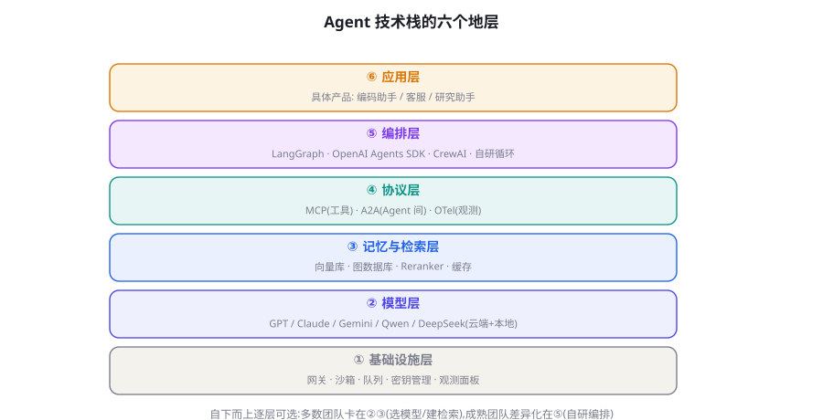
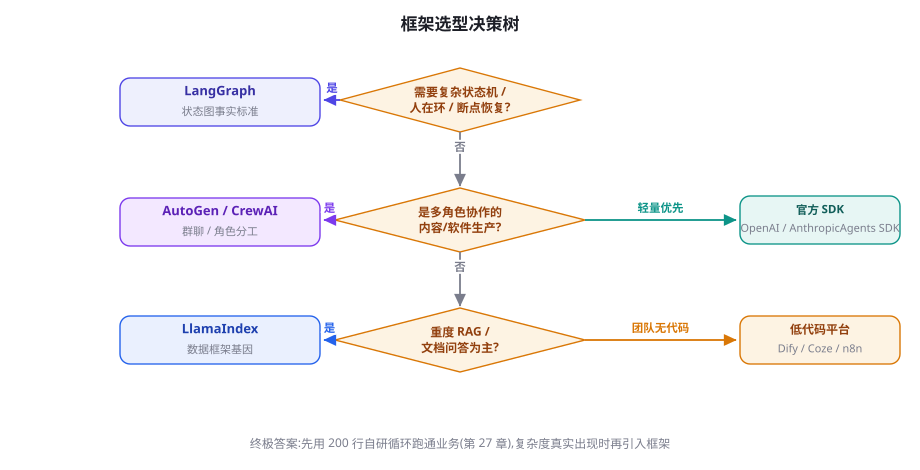

Agent 技术栈总览与选型决策树
从这一章起进入工程篇。先立好地图：Agent 技术栈的六个地层、自研与框架的真实取舍、以及一棵可以直接走的选型决策树。读完本章，后面各框架章节你就知道该精读哪几个、略读哪几个。
六个地层：Agent 技术栈的全景

| 地层 | 职责 | 代表选项 | 团队自建常见度 |
|---|---|---|---|
| ⑥ 应用层 | 具体产品形态与领域逻辑 | 自研产品 / 垂直 SaaS | 必然自建 |
| ⑤ 编排层 | Agent 循环、状态、工具调度、人机协同 | LangGraph / Agents SDK / CrewAI / 自研 | 常自建（薄封装） |
| ④ 协议层 | 工具接入、Agent 互操作、可观测标准 | MCP / A2A / OpenTelemetry GenAI | 直接采用 |
| ③ 记忆与检索层 | 向量库、记忆存储、Reranker、缓存 | pgvector / Qdrant / Mem0 / Zep | 半自建（业务逻辑自写） |
| ② 模型层 | 推理能力供给 | GPT / Claude / Gemini / Qwen / DeepSeek | 直接采用 + 网关 |
| ① 基础设施层 | 网关、沙箱、队列、密钥、监控 | LLM 网关 / Docker / Temporal / Langfuse | 拼装为主 |
这张图有两个读法。纵向读是「一台新项目从哪层开始搭」：自上而下——先定义应用层任务，再选编排，其余层跟随。横向读是「故障域在哪」：线上事故多数横跨②③（模型能力抖动、检索质量波动），而架构债通常沉积在⑤（编排层里塞满业务逻辑）。第 79-80 章的运维与规模化会反复回到这六层。
自研还是用框架：把问题问对
「要不要用框架」是个错误的问题，正确的问题是：框架的哪一层抽象，与你的任务复杂度匹配？框架提供的价值按序是：工具调用的协议封装（几乎所有团队都该用现成的——第 17 章的细节没有必要每次重写）、状态与检查点管理（任务超过单轮就很有价值）、人机协同原语（审批/中断的脚手架）、可观测性集成、以及生态（MCP 客户端、评测工具的现成接入）。框架的成本是：抽象泄漏时你必须读它的源码、升级时的破坏性变更、以及「框架思维」对团队理解机制的钝化。
一个被越来越多团队验证的路径是「三轮演进」：第一轮，用第 27 章的 200 行自研循环跑通业务——此时你获得的是对机制的肌肉记忆；第二轮，当真实需求（断点恢复、人审、子任务）出现时，引入框架的对应模块而非全家桶——比如只用 LangGraph 的状态图与 checkpointer；第三轮，当你的编排逻辑稳定且与业务深度耦合时，把框架「消化」为自研运行时——保留其数据结构设计，替换其执行引擎。三轮的每一步都由真实需求驱动，而非技术时尚。
不是「选错框架」，而是把业务逻辑写进框架的抽象里——回调、装饰器、框架专属状态机层层缠绕，半年后想迁移时发现业务与框架难分难解。防御性做法：业务逻辑写成纯函数（输入输出明确、不 import 框架），框架只负责「调度它们」。这个纪律让换框架的成本从「重写」降为「重接」。第 28 章会给出 LangGraph 版的具体分层示例。
选型决策树

文字版决策序列（与图等价，方便检索）：
- 任务能表达为 ≤3 步的固定流程吗？能 → 不需要编排框架，提示链 + 函数调用即可（第 7、17 章）。
- 需要状态机、断点恢复、人审吗？是 → LangGraph（生态与生产案例最全）或官方 Agents SDK（轻量、官方维护）。
- 核心是数据/RAG 而非自主行动？是 → LlamaIndex 优先，编排需求再补 LangGraph。
- 多角色协作且角色职责天然分明？是 → CrewAI（轻量角色抽象）或 AutoGen（群聊/事件驱动），但先读第 24 章确认多 Agent 真有必要。
- 团队没有工程资源？是 → 低代码平台（Dify/Coze/n8n，第 35 章），并预先想好「毕业路径」——平台锁定后的迁移成本。
- 以上都不是/都试过不满意？→ 自研薄运行时（第 27 章骨架 + 第 25 章协同机制），只依赖协议层（MCP/OTel）。
第①层的细看：LLM 网关为什么是第一块基建
如果只允许你为 Agent 系统先建一块基建，选 LLM 网关。它在你的业务代码与模型 API 之间放一个自有服务，职责五件：统一协议（业务代码面向自有格式，各厂商差异在网关内消化）、密钥与配额管理（业务侧只见网关令牌，密钥轮换不动代码）、智能路由与自动降级（按任务标签路由到不同模型；主模型故障自动切备）、记账（每次调用的 token 与成本按「团队-应用-任务」三维度落库——没有这笔账，成本优化无从谈起）、缓存（精确缓存与语义缓存，第 78 章）。开源选项 LiteLLM、OneAPI 等可用，自研核心不过几百行。网关的另一重价值常被低估：它是「换模型」这一动作的组织学前提——有了网关，「试用新模型」变成一次路由配置；没有网关，每个业务团队都要改代码，于是没有人再测试新模型，供应商锁定便在惰性中完成。
沙箱：Agent 的「体」住在哪里
凡是要执行模型生成代码、或操作真实文件系统的 Agent，都需要一块执行场地。沙箱选型按隔离强度与启动速度的两难展开：容器（Docker）隔离够用、秒级启动，是多数场景的默认；微 VM（gVisor/Firecracker）内核级隔离，适合执行不可信代码，启动略慢；进程级（受限用户 + 文件白名单）最快，只适合完全自托管代码。实践要点：镜像预置常用依赖（Agent 的每次启动都在等环境）、文件系统按任务挂载（不要给全盘）、网络出口默认关闭按需白名单、资源限额必设（失控的代码生成循环能吃满一台机器）。第 60 章会从威胁模型角度完整重审这套设计；本节你只需要记住：沙箱是「Agent 能做什么」的物理边界，权限系统是逻辑边界，两者一个都不能省。
"""框架/模型对决:同一评测集,可替换的执行器"""
import json, statistics
def load_cases(path="eval/cases.jsonl"):
return [json.loads(l) for l in open(path, encoding="utf-8")]
def run_case(case, executor) -> dict:
"""executor: 任何实现了 run(task)->result 的可调用(可来自任意框架)"""
result = executor(case["task"])
return {
"id": case["id"],
"passed": grade(result, case), # 评分器独立于执行器
"latency_s": result.meta["latency"],
"cost_usd": result.meta["cost"],
}
def duel(name_a, exec_a, name_b, exec_b, n=None):
cases = load_cases()[:n]
for name, ex in [(name_a, exec_a), (name_b, exec_b)]:
rows = [run_case(c, ex) for c in cases]
pass_rate = sum(r["passed"] for r in rows) / len(rows)
med_lat = statistics.median(r["latency_s"] for r in rows)
total_cost = sum(r["cost_usd"] for r in rows)
print(f"{name}: 通过率 {pass_rate:.0%} | "
f"中位延迟 {med_lat:.1f}s | 总成本 ${total_cost:.2f}")
# 逐案对比找分歧案例,是下一轮分析的原料
json.dump(rows, open(f"eval/{name}_rows.json", "w"))这个骨架的关键设计是评分器与执行器解耦：任何框架的 Agent 只要包一层 executor 接口就能参赛，而评分标准恒定——这让「框架对决」成为可重复、可积累的常规操作。第 56 章会把它工程化进 CI。
模型选型：第二棵决策树
编排层之外，团队问得最多的是模型。给一个简洁的决策框架，按任务特征三问：
- 需要多强的推理？复杂多跳、代码生成、关键决策 → 推理模型档（o 系列/R1 类，第 43 章）；常规对话与分类 → 旗舰对话档；大批量简单任务 → 小型快模型。级联路由（第 78 章）把三档组合使用。
- 需要多长上下文？整库代码理解、超长文档 → 长窗模型优先，但记住「名义窗口 ≠ 有效窗口」（第 5 章），200K 窗口的甜点区通常在前 100K。
- 部署约束是什么？数据不出域 → 开源模型私有化（Qwen/DeepSeek/vLLM，第 11、88 章）；延迟敏感 → 就近区域端点或小模型；成本敏感 → 国产模型与批量接口的价格常差一个量级。
三条跨厂商的工程提醒：① 不要单点绑定——LLM 网关 + 统一抽象（第 80 章）让「换模型」成为配置变更；② 不要按榜单选型——用你自己的评测集（第 13 章）跑前二名的对决，榜单与你的任务分布常常不相关；③ 关注「行为稳定性」与「能力峰值」——生产系统对「同一个提示词长期行为一致」的需求，往往高于偶尔惊艳的能力。
# adr-001-agent-stack.md
date: 2026-09-03
status: accepted
decision:
orchestration: langgraph # 决策树第2步:需要断点恢复与人审
state_backend: postgres # checkpointer 落 Postgres
model_plan:
planner: claude-sonnet # 强模型,低频
executor: gpt-4o-mini # 快模型,高频
fallback: deepseek-v3 # 网关降级目标
tools_protocol: mcp # 工具统一走 MCP(第36章)
memory: 自研双区制(第19章) + pgvector
sandbox: docker,网络默认关闭
observability: langfuse + OTel GenAI 语义约定(第79章)
rejected:
- crewai: 角色抽象与本项目单一职责不符
- 全自研运行时: 断点恢复与人审的工程量超出团队当前带宽
review_triggers: # 何时重新审视本决策
- langgraph 出现破坏性版本升级
- 任务成功率连续两周低于目标 10%这个模板把本章的决策过程物化为团队资产。它的价值不在「记录」而在「review_triggers」一栏——架构决策应该带过期条件。Agent 技术栈的半衰期决定了「一次选定、三年不改」的幻想不成立；健康的姿态是「决策 + 触发器」：写明什么信号出现时该重新开会。半年后当有人问「为什么用 LangGraph」，ADR 替你回答；当触发器响起，ADR 提醒所有人重新评估——这两个时刻，就是架构文档的全部意义。
低代码与代码的边界：别把毕业论文写在模板里
低代码平台（Dify/Coze/n8n，第 35 章详评）在选型讨论中常被错误定位。它们真正的甜点区是：验证期（一天内搭出可点击的 Demo 说服所有人）、标准化流程（客服问答、内容审核这类「节点固定、逻辑浅」的任务）、非工程团队自治（运营自己搭、自己改）。它们的硬边界也很清楚：版本控制粗糙（提示词与流程的历史难以 code review）、复杂逻辑表达痛苦（条件嵌套三层就开始反人类）、测试与 CI 缺位、以及最要紧的迁移锁定。所以健康的使用姿势是「把低代码当原型工具，不当生产归宿」：验证成功后，用同样的提示词与流程在代码层重建——这个重建通常只需数天，因为所有设计决策已经由低代码阶段验证过了。反向路径（先代码后低代码）则几乎总是失败的：把已验证的生产逻辑塞回可视化画布，得到的只是维护噩梦。
出现以下任一信号就该启动迁移：① 需要单元测试或 CI；② 流程里出现「复制节点再改一点」的第三份拷贝；③ 需要接入平台不支持的自有系统；④ 排障需要导出日志到平台之外分析；⑤ 团队里第一位工程师入职了。把这张清单贴在项目文档里——离开的时机判断，比选型的判断更容易被拖延。
平台型产品：第三种选择
除了「框架 + 自建」，还有直接购买成品能力的选项：托管编码 Agent（Claude Code、Codex）、垂直 Agent 平台（客服/销售/研报的 SaaS）、以及企业 Agent 套件。决策标准两条：任务是否高频且标准化（是 → 买，你的差异化不在那里）、数据边界是否可接受（数据敏感 → 自建不可绕过）。买的隐性成本是定制天花板与锁定；自建的隐性成本是永远在维护地基。健康企业的组合通常是：差异化场景自建、标准化能力采购、两者用协议层（MCP/A2A）衔接——第 37 章会展开这个互操作愿景。
每一层的成本权值：把钱花在哪
给六层附上一张「钱和精力应该往哪压」的权重表。以一个典型中型 Agent 项目（月调用百万次级）的年度投入结构为参照：模型推理费用是最大单一项（常占直接成本的六到八成），但它的优化手段全在别的层——网关的路由与缓存（①）、编排的上下文管理（⑤）、记忆检索的精准注入（③）都能直接砍它；人力是第二大头，其中提示词与评测的迭代工时又占人力的大头——这就是为什么第 13 章把「评测思维」列为地基；基建（向量库、沙箱、观测）是稳定的小头，但欠账的利息极高（没有观测的团队排障时间翻倍）。这张权重表的操作含义：优化预算的优先顺序是⑤①③，而不是直接去和模型厂商砍价——同样 30% 的成本降幅，改上下文管理一周可达，换模型谈判一个季度未必。
起步检查单：新项目的第一周
把本章内容压缩成一张第一周可执行清单：Day 1——写任务定义书（输入、输出、验收标准各一段，产品负责人签字）；Day 2——过一遍选型决策树，产出 ADR（哪怕只有五行）；Day 3——搭网关与最小观测（trace 落库即可，界面后补）；Day 4——跑通第 27 章的 200 行循环接真实工具；Day 5——建 20 条评测集跑出基线，记录基线数字。一周结束时你拥有的不是一个 Demo，而是「可度量的起点」——评测基线的存在，让后续每一次架构决策（包括要不要上框架）都有据可依。很多团队跳过 Day 5 直接开始堆功能，然后在第三个月发现「不知道变好还是变坏了」——那是最贵的无知。
完整走查：三个真实场景的选型
用三个典型场景演练本章工具，注意每个场景的「意外结论」。场景一：企业知识库问答。决策树走到「核心是数据/RAG」→ LlamaIndex/自研检索管线为主；意外结论是编排层可以薄到不存在——固定管线（改写→检索→重排→生成）就是全部，第 27 章的循环都未必需要。钱应该压在③层的分块与重排。场景二：运营自动化（跨系统搬数据）。决策树落在「需要状态机与断点」→ LangGraph + Temporal 式持久执行；意外结论是模型层可以大量用小模型——流程判断并不难，难的是可靠性与幂等，预算应压在①层的队列与审计。场景三：行业研究助手。多源检索+长报告 → Orchestrator-Workers（第 24 章）+ 深研架构（第 73 章）；意外结论是评测比编排更值得先建——这类产出的「好」最难定义，没有评测集的迭代全是掷骰子，第一个月的正确产出是 50 份人工标注的优质报告样本。三个场景合起来验证了本章的中心论点：技术栈的形状由任务形状决定，而所有场景的公共第一步都是「定义验收标准」。
评测基建是选型的一部分（而且是最先该建的部分）
选型讨论有个系统性盲区：大家比较「框架 A vs B」「模型 X vs Y」，却忘了没有评测基建时，一切比较都是幻觉。第 13 章会完整讲评测方法，这里只强调它在选型语境下的地位：选型决策树每走一步，都需要一次「两个候选在你的任务上对决」的实验；这类实验的边际成本，在评测基建建成后是「几小时」，否则是「一次仓促的主观判断」。因此正确的顺序是：评测先行于选型——哪怕评测集最初只有 30 条任务。实操上，把它写进选型流程：任何框架/模型决策的 PR（或 ADR）必须附「对决实验结果 + 评测集版本」；没有数字的选型讨论不开会。这个纪律让团队在半年后依然有能力冷静地「换」，而不是被沉没成本绑死在最初的偶然选择上。
实操：一周选型 Sprint
把本章内容压缩成一个可直接执行的日程，适合新团队或新项目启动。第一天：写任务定义与验收标准（产品负责人主导），圈定 30 条评测任务——注意此时不讨论任何技术选型。第二天：搭最小执行器（第 27 章骨架）+ 评分脚本，30 条任务跑出基线。第三天：跑决策树——大概率结论是「暂时不需要框架」；若需要，选两个候选准备对决。第四天：候选对决（评测集说话），记录 ADR。第五天：补齐护栏三件套（步数上限、成本上限、审计日志），把评测接入手动触发脚本。五天结束，你拥有的不是一个「选好的框架」，而是一台会产出决策依据的机器——这才是本章的真正交付物。后续第 27 章的 200 行实现，就是这个 Sprint 第二天的完整展开。
团队分工：谁来负责哪一层
Agent 项目的团队配置与传统后端有明显差异，值得提前规划。最小可行配置三角色：产品/场景负责人——定义任务边界与验收标准，掌握「什么值得自动化」的判断（最稀缺的角色）；Agent 工程师——负责⑤⑥层：编排、提示词、工具设计、评测（本书的主要读者）；平台工程师——负责①③层：网关、沙箱、检索基建、可观测性。有训练需求时加算法工程师（第 38-49 章的工作）。两条组织经验：其一，评测集的 owner 必须是产品负责人而非工程师——「什么算对」是业务判断，工程师代写评测集是许多项目质量失焦的起点；其二，给「提示词与工具的变更」建立与代码同级的 review 流程——它们就是生产逻辑，散装修改等于绕过 code review。第 108 章会给出学习资源帮团队成员快速上手。
三个高频疑问
Q：小团队/个人开发者要不要照搬六层？缩水版即可：网关用一个开源库进程内起（LiteLLM）、编排用第 27 章自研循环、检索先用内存索引、观测先打 JSONL 日志。层数不变但每层都选最轻实现——分层是思维结构，不是部署数量。等你有了第二个 Agent，再把公共层抽出去。
Q：国产模型/开源模型在栈里怎么摆？按「任务档位」混布：常规执行类（分类、抽取、格式化）大量可用性价比高的国产旗舰；复杂推理与关键决策视评测结果定；数据敏感场景私有化开源模型。网关按任务标签路由即可，唯一要守住的是统一评测口径——不同模型的评测必须在同一套自己的评测集上跑，否则「混布」会退化成「乱布」。
Q：什么时候该考虑 Agent 平台（如企业级套件）？三个信号：你要管理十个以上不同 Agent 的组织级权限与审计；合规要求（金融/医疗）需要现成的审计与数据驻留能力；团队规模不足以维护自建地基。平台买的不是能力是「治理的现成性」——但先确认它的协议开放性（MCP 支持、导出能力），否则你买的是一座新的孤岛。
三个高频疑问
Q：团队小（1-2 人）需要这么多层吗？不需要，但分层地图依然有用——它告诉你可以省略什么：单人项目可以跳过网关（用厂商 SDK 直连）、跳过专用沙箱（本地受限运行）、跳过消息队列。永远不能省的三件：评测集、审计日志、代码与数据的备份（哪怕只是 git 与一个导出脚本）。小团队的优势恰恰是「每层都薄」——六层地图帮你确认没有漏掉「薄但必要」的东西。
Q：该押注哪个生态？押注「协议与数据」而非「框架与 API」。框架三年一换代（回想 LangChain 一年内的多次破坏性重构），但 MCP 这样的协议层、OpenTelemetry 这样的观测标准、以及你自己的评测集与工具 Schema，都是跨框架资产。把资产沉淀在稳定层，把易变层的每次投入当作可弃的——这是 Agent 领域的「投资组合策略」。
Q：怎么跟上技术演进而不被拖着跑？设「季度技术日」：每季度固定一天，强制复测一次关键假设（模型评测对决、框架新版本破坏性变更、协议生态动态），更新 ADR 的 review_triggers。日常对新闻「只记录不行动」——把反应式焦虑转化为日历驱动的纪律。
给小结之前的一句提醒：本章刻意没有给出「2026 年最佳框架」的答案——这类答案的生命周期以月计，而本章给你的决策结构（地层图、三轮演进、决策树、ADR + 触发器、评测先行）生命周期以年计。当有人（包括未来的你）问「该用什么」，把问题引回这个结构：任务定义清楚了吗？评测集在哪？两个候选对决过了吗？——这三个问题的答案，永远比任何外部推荐更可靠。
按你的决策树结果选读：落在「官方 SDK」分支 → 第 29 章（OpenAI）与第 30 章（Claude）；「LangGraph」分支 → 第 28 章精读；「多角色协作」→ 第 31-33 章三章连读；「低代码」→ 第 35 章；无论哪个分支，第 27 章（手写最小 Agent）与第 36 章（MCP）都是必读——前者给你机制地基，后者给你工具生态的通行证。
本章小结
- 六地层：应用/编排/协议/记忆检索/模型/基础设施——越往下越别造轮子。
- 「要不要框架」问错了：应问「框架的哪层抽象匹配我的复杂度」；三轮演进（自研→按需引入→消化自研）由真实需求驱动。
- 业务逻辑写成纯函数、不 import 框架——这是迁移成本的最大保险。
- 选型决策树的默认答案是「先跑通再说」；模型选型三问：推理强度、上下文长度、部署约束。
- 一周选型 Sprint 的交付物是「会产出决策依据的机器」：评测集 + 对决脚本 + ADR。
- 差异化场景自建、标准化能力采购、协议层衔接。
- 第一块基建选 LLM 网关：统一协议、密钥、路由、记账、缓存——它是「换模型」的组织学前提。
- 架构决策写 ADR 并带 review 触发器；新项目第一周以「20 条评测集基线」收尾。
自测题
- 把你的项目映射到六地层，指出哪一层「自建了不该自建的东西」、哪一层「过度依赖了外部」。
- 「业务逻辑写成纯函数」在你当前的技术栈里具体意味着什么？举一个会违反它的写法。
- 走一遍决策树：你的下一个 Agent 项目应该落在哪个分支？写出决策链上的每一步答案。
- 模型选型三问之外，你认为还有哪个维度对你的场景关键？（提示：语言、多模态、工具调用质量、价格……）
参考文献与延伸阅读
- Anthropic (2024). Building Effective Agents（「能用工作流就别用 Agent」的原始出处）. anthropic.com
- LangChain (2024). LangGraph 文档：状态机与检查点. langchain-ai.github.io/langgraph
- OpenAI (2024). A practical guide to building agents. openai.com
- 12 Factor Agents (2025). 构建可靠 LLM 应用的十二条原则. github.com/humanlayer/12-factor-agents（自研派的系统化宣言）